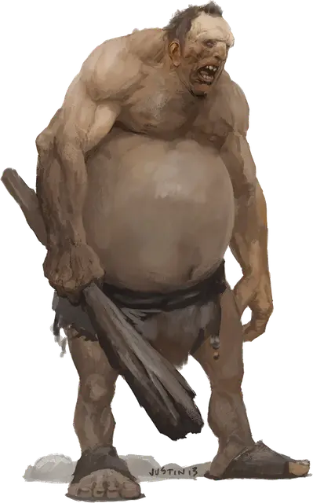

Холмовой великан
Hill Giant
Огромный Великан, хаотично-злой

Класс Доспеха 13 (природный доспех)
Хиты 105 (10к12 + 40)
Скорость 40 футов
| мод | спас | ||
|---|---|---|---|
| СИЛ | 21 | +5 | +5 |
| ЛОВ | 8 | −1 | −1 |
| ТЕЛ | 19 | +4 | +4 |
| мод | спас | ||
|---|---|---|---|
| ИНТ | 5 | −3 | −3 |
| МДР | 9 | −1 | −1 |
| ХАР | 6 | −2 | −2 |
Навыки Восприятие +2
Чувства пассивное Восприятие 12
Языки Великаний
Опасность 5 (1800 опыта)
Бонус мастерства +3
Среда обитания Холмы
Особенности
Новые опции для великанов. Некоторые взрослые холмовые великаны любят обрушивать свои тела на маленьких врагов и давить их своей массой. Эта способность представлена в виде следующих действий. (Storm King's Thunder)
Раздавить. . Рукопашная атака оружием: +8 к попаданию, досягаемость 5 фт., одна средняя или более маленькая цель. Попадание: Дробящий урон 26 (6к6+5), великан падает с ног в пространство цели и цель становится схвачена (Сл высвобождения 15). Пока цель схвачена, она сбита с ног. Захват заканчивается, когда великан встает на ноги.
Действия
Мультиатака. Великан совершает две атаки палицей.
Палица. Рукопашная атака оружием: +8 к попаданию, досягаемость 10 футов, одна цель. Попадание: Дробящий урон 18 (3к8 + 5).
Камень. Дальнобойная атака оружием: +8 к попаданию, дистанция 60/240 футов, одна цель. Попадание: Дробящий урон 21 (3к10 + 5).
Описание
Холмовые великаны — эгоистичные и недалекие громилы, охотящиеся ради пищи и совершающие набеги в постоянном поиске еды. Они бездумно бродят по холмам и лесам, поглощая все, что могут, и заставляя меньших существ кормить их. Лень и тупость давно бы положила им конец, если бы не огромный размер и сила.
Примитивные. Холмовые великаны живут в холмах и горных долинах по всему миру, собираясь в мазанках или хижинах из грубых бревен. Их кожа смугла из-за жизни, проведенной на склонах холмов и сна под солнцем. Оружием им служат вырванные с корнем деревья и камни, поднятые с земли. Их пот смешивается с запахом носимых необработанных шкур животных, плохо сшитых волосами и кожаными ремнями.
Больше — значит лучше. В мире холмовых великанов гуманоиды и животные это легкая добыча, на которую можно безнаказанно охотиться. Такие существа как драконы и другие великаны это суровые противники. Холмовые великаны оценивают силу по размеру.
Холмовые великаны не осознают, что подчиняются орднунгу. Они знают только то, что другие великаны больше и сильнее, чем они, поэтому им надо подчиняться. Вождь племени холмовых великанов — обычно самый высокий и толстый, но который может при этом двигаться. Только в исключительных случаях холмовой великан, у которого мозгов больше, нежели мышц, с помощью хитрости получает расположение великанов более высокого статуса, умело подрывая общественный порядок.
Ненасытные пожиратели. Если холмовым великанам нечем заняться, они едят так часто, как только могут. Холмовой великан охотится и добывает еду один или вместе с лютым волком, так, чтобы не делиться с соплеменниками. Великан ест все, кроме того, что на первый взгляд смертельно, как, например, известные ядовитые существа. Гнилое мясо — легкая добыча, впрочем, как и увядшие растения и даже грязь.
Фермеры боятся и ненавидят холмовых великанов. Какой-нибудь хищник, например, анхег, может вылезти на поле и съесть корову-другую, пока его не прогонят, а холмовой великан поглотит стадо крупнорогатого скота, потом перейдет на овец, коз и куриц, а потом переключится на фрукты, овощи и зерно. Если же под рукой окажется и семья фермера, великан может перекусить и ей.
Глупые и смертоносные. Благодаря способности переваривать практически что угодно, холмовые великаны пережили эры, но так и остались дикарями, питающимися и размножающимися в холмах как животные. Им никогда не требовалось адаптироваться или меняться, так что их разум и эмоции остались простыми и неразвитыми.
Не имея собственной культуры, холмовые великаны копируют традиции существ, за которыми наблюдают, прежде чем съесть. При этом они не думают о своем размере и весе. Племена холмовых великанов, старающиеся имитировать эльфов, валили целые леса в попытках жить на деревьях. Другие хотели занять города и деревни гуманоидов, пока не столкнулись с дверьми и окнами зданий, после чего, от потуг войти, разрушались стены и крыши.
В общении холмовые великаны грубы, прямы и плохо разбираются в обмане. Холмового великана можно одурачить, и он будет убегать от другого великана, если несколько крестьян накроются одеялом и встанут друг другу на плечи, держа гигантскую раскрашенную тыквенную голову. Аргументы бессмысленны для холмового великана, однако умное существо иногда может подстрекнуть холмового великана на выгодные для себя действия.
Яростные хулиганы. Холмовой великан, чувствующий, будто его обманули, оскорбили или выставили дураком, вымещает свою ужасающую ярость на всем, что попадается под руку. Даже размазав обидчика в кашу, великан продолжает буйствовать, пока не успокоится, не заметит что-нибудь более интересное или не проголодается.
Если холмовой великан провозглашает себя королем территории, на которой проживают гуманоиды, она управляется террором и тиранией. Его решения меняются вместе с настроением, и если он забудет свой самопровозглашенный титул, то может запросто съесть подданных.
См. дополнительно статью: "Бестиарий: Великаны"